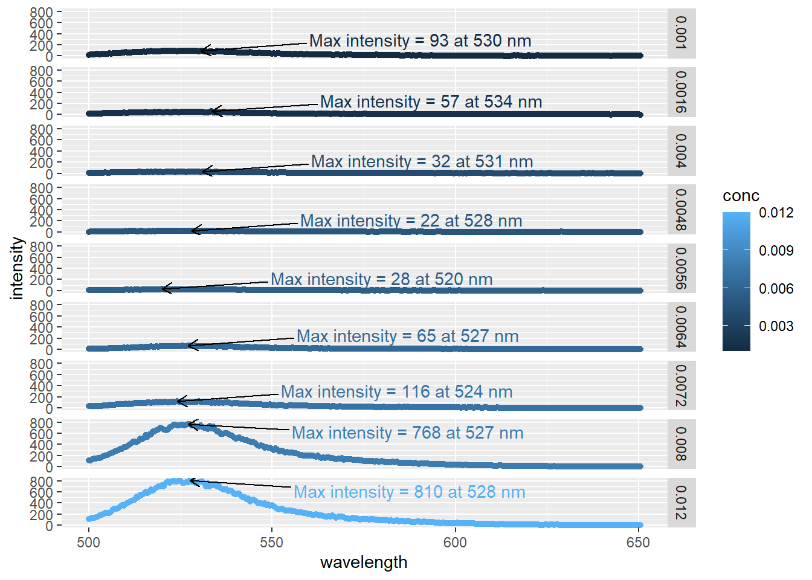
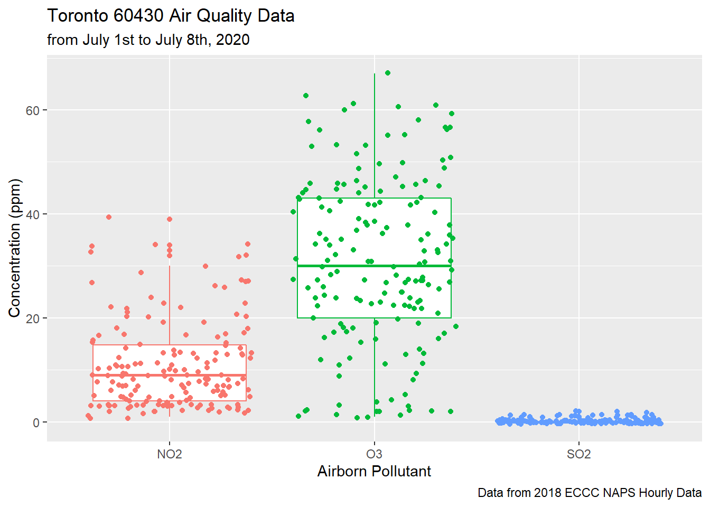

Chapter 2 R coding basics
Now that you know how to navigate and run code in RStudio, we’ll take a look at the basics of R. As we’re chemist first, and not computer programmers, we’ll try and avoid as much of the nitty-gritty underneath the hood aspects of R. However, a risk of this approach is being unable to understand errors and warnings preventing your code from running. As such, we’ll introduce the most important and pertinent aspects of the R language to meet your environmental chemistry needs.
2.1 Variables
We’ve already talked about how R can be used like a calculator:
(1000 * pi) / 2## [1] 1570.796(2 * 3) + (5 * 4)## [1] 26But managing these inputs and outputs is simplified with variables. Variables in R, like those you’ve encountered in math class, can only have one value, and you can reference or pass that value along by referring the variable name. And, unlike the variables in math classes, you can change that value whenever you want. Another way to think about it is to treat variables in R like a box which you use to store a value. Then you can simply open the box somewhere else without having to worry about the hassle of what’s inside.
You can assign the outputs variables using <-, as shown below.
x <- 12
x## [1] 12In addition to reading code top to bottom, you often read it from right to left. x <- 12 would be read as “take the value 12 and store it into the variable x.” The second line of code, x, simply returns the value stored inside x. Note that when a variable is typed on it own, R will print out it’s contents. You can now use this variable in snippets of code:
x## [1] 12x <- x * 6.022e23
x## [1] 7.2264e+24Remember, we’re evaluating from right to left, so the code above is taking the number 6.022e23 and multiplying it by the value of x, which is 12 and storing that value back into x. Note that variable names are case sensitive, so if your variable is named x and you type X into the console, R will not be able to print the contents of x. Variable names can consist of letters, numbers, dots (.) and/or underlines (_). Here are some rules and guidelines for naming variables in R:
- Rules dictated by R
- names must begin with a letter or with the dot character.
varand.varare acceptable. - Variable names cannot start with a number or the
.character cannot be preceded by number.var1is acceptable,1varand.1varare not. - Variable names cannot contain a space.
var 1is interpreted as two separate values,varand1. - Certain words are reserved for R, and cannot be used as variable names. These include, but are not limited to,
if,else,while,function,for,in,next,break,TRUE,FALSE,NULL,Inf,NA, andNaN
- names must begin with a letter or with the dot character.
Good names for variables are short, sweet, and easy to type while also being somewhat descriptive. For example, let’s say you have an air pollution data set. A good name to assign the data set to would be airPol or air_pol, as these names tell us what is contained in the data set and are easy to type. A bad name for the data set would be airPollution_NOx_O3_June20_1968. While this name is much more descriptive than the previous names, it will take you a long time to type, and will become a bit of a nuisance when you have to type it 10+ times to refer to the data set in a single script. Please refer to the Style Guide found in Advanced R by H. Wickham for more information.
Lastly, R evaluates code from top-to-bottom of your script. So if you reference a variable it must have already been created at an earlier point in your script. For example:
y + 1## Error in eval(expr, envir, enclos): object 'y' not foundy <- 12The code above returns the object 'y' not found error because we’re adding + 1 to y which hasn’t been created yet, it’s created on the next line. These errors also pop up when you edit your code without clearing your workplace. All variables created in a session are stored in the working environment so you can call them, even if you change your code. This means you can accidentally reference a variable that isn’t reproduced in the latest iteration of your code. Consequently, a good practice is to frequently clear your work-space suing the ‘broom’ button in the environment pane. This will help you to ensure the code you’re writing will is organized in the correct order; see Saving R scripts for why this is important.
2.2 Data Types
Data types refer to how data is stored and handled by and in R. You can really get into the weeds on this, but we’ll focus on the most common types so you can get started on your work. Firstly, here are the data types you’ll likely be working with:
- character:
"a","howdy","1", is used to represent string values in R. Basically it’s text that you’d read. Note the quotation marks and the fact that"1", despite being a number, is stored as a character. - numeric (real or decimal):
2,3.14,6.022e23. - integer:
2L, note the ‘L’ tells R this is an integer. - logical: either
TRUEorFALSE
There are some helpful functions to test the data type of a value in R as a frequent source of error and frustration are values stored in the wrong data type.
x <- "6"
x / 2## Error in x/2: non-numeric argument to binary operatorYou’ll see the error above frequently, and it’s simply saying you’re trying to do math on something you can’t do math on. You might think if x is 6, why can’t I divide it by 2? Let’s see what type of data x is:
is.numeric(x) # test if numeric ## [1] FALSEis.logical(x) # test if logical## [1] FALSEis.integer(x) # test if integer ## [1] FALSEis.character(x) # test if character## [1] TRUESo the value of x is a character, in other words R treats it as a word, and we can’t do math on that (think, how would you divide a word by a number?). So let’s convert the data type of x to numeric to proceed.
x ## [1] "6"x <- as.numeric(x)
is.numeric(x)## [1] TRUEx## [1] 6x / 2## [1] 3So we’ve converted our character string "6" to the numerical value 6. Keep in mind there are other conversion functions which are described elsewhere, but you can’t always convert types. In the above example we could convert a character to numeric because it was ultimately a number, but we couldn’t do the same if the value of x was "six".
2.3 Data Structures
Data structures refers to how R stores data. Again, it’s easy to get lost in the weeds here so we’ll focus on the most common and useful data types for your work which will overwhelmingly be data frames. Data frames consist of data stored in rows and columns. If you’ve ever worked with a spreadsheet (i.e. Excel), it’s essentially that with the caveat that all data stored in a column must be of the same type. Again, different columns can have different data types, but within a column all the data needs to be the same type. R will convert your data otherwise to make it all the same. A common error is a single character in a column of numerical values leading to the entire column to be interpreted as character values; similar to what we discussed above. Errors like this most often stem from mistakes in recording and importing your data so be careful!
Let’s import some data to see a data frame:
airPol <- read_csv("data/2018-07-01_60430_Toronto_ON.csv")
# data table so you can browse the data online
DT::datatable(airPol)The above is air quality data measured in downtown Toronto around July 2018. Some of the variables are:
naps,city,p,latitude,longitudeto tell you where the data was measured.data.timefor when the measurements were taking.pollutantfor the chemical measuredconcentrationfor the measured concentration in parts-per-million (ppm).
This data is stored tidy, which is to say each column is a variable and each row is an observation. So reading the first row, we know that the Toronto 60430 station on 2018-07-01 at midnight measured ambient O3 concentrations of 46 ppm. The concept of tidy data is important and is integral to working in R. It’s discussed further in Tidying your data.
2.3.1 Other data structures
R has several other data structures. They aren’t as frequently used, but it’s worth being aware of their existence. Other structures include:
- Vectors contain multiple elements of the same type; either numeric, character (text), logical, or integer. Vectors are created using
c(), which is short for combine. A data frame is just multiple vectors arranged into columns. Some examples of vectors are shown below.
num <- c(1, 2, 3, 4, 5)
num## [1] 1 2 3 4 5char <- c("blue", "green", "red")
char## [1] "blue" "green" "red"log <- c(T, T, T, F, F, F)
log## [1] TRUE TRUE TRUE FALSE FALSE FALSE- Lists are similar to vectors in that they are one dimensional data structures which contain multiple elements. However, lists can contain multiple elements of different types, while vectors only contain a single type of data. You can create lists using
list(). Some examples of lists are shown below. You can usestr()to reveal the different components of a list, in a more detailed format than if you were to simply type the assigned name of the list.
hi <- list("Hello", c(5,10,15,20), c(T, T, F))
str(hi)## List of 3
## $ : chr "Hello"
## $ : num [1:4] 5 10 15 20
## $ : logi [1:3] TRUE TRUE FALSEhi## [[1]]
## [1] "Hello"
##
## [[2]]
## [1] 5 10 15 20
##
## [[3]]
## [1] TRUE TRUE FALSEThere are many freely available resources online which dive more in depth into different data structures in R. If you are interested in learning more about different structures, you can check out the Data structure chapter of Advanced R by Hadley Wickham.
2.4 R packages and functions
Functions are bits of code written to execute a specific task. We’ve already used several functions such as library() to import packages, and read_csv() to read the air quality data as seen in Data Structures above. Functions offer a convenient means to reduce the amount of typing while making code more reliable and readable. Some of these functions are built into R, such as library(), but often people write new functions to improve upon base R to help it meet the needs of it’s users, such as the read_csv(). A collection of functions for a similar tasks is stored in a package, such as the tidyverse suite of packages which contains functions for plotting (ggplot2), reading data read_csv() and more.
Let’s take a look at one of the functions you’ll be using the most: ggplot from the ggplot2 package which is included in the tidyverse.
2.4.1 ggplot2
ggplot allows you to create a variety of visualizations to explore and communicate your data and results. Like every function, ggplot has required arguments, i.e. data and instructions you pass to the function. The required arguments for this function are the data to be plotted and the aesthetic mappings for how the plot should look. Using our loaded air quality data from above:
ggplot(data = airPol,
aes(x = date.time,
y = concentration,
colour = pollutant)) +
geom_point()
Breaking this down:
- We’re calling
ggplot()in the first line and passing the arguments inside the parentheses - We’re specifying that we want to plot the loaded air pollution data with
data = airPol - We insert a
,to separate each argument - We specified the aesthetics (
aes()) arguments:x = data.timemeans our x-axis will be the data in thedata.timecolumn.y = concentrationmeans our y-axis will be the data in theconcentrationcolumn.colour = pollutantmeans we colour each point based onpollutantcolumn.
- We add a
+on the second last line of code as this so we can add components toggplot() - And finally we add
geom_point()to specify what type of plot we want; in this case it’s a scatter plot.geomsare layers that combine data, aesthetic mappings, and other data to create a plot.
ggplot() allows us to quickly create numerous plots of our data to aid our analysis. We can pass more than geoms to ggplot to improve our graphics. We can even stack geoms!
ggplot(data = airPol,
aes(x = pollutant,
y = concentration,
colour = pollutant)) +
geom_boxplot() +
geom_jitter() +
labs(title = "Toronto 60430 Air Quality Data",
subtitle = "from July 1st to July 8th, 2020",
x = "Airborn Pollutant",
y = "Concentration (ppm)",
caption = "Data from 2018 ECCC NAPS Hourly Data") +
theme(legend.position = "none")
This plot looks more complicated then the previous one, but it’s the same data plotted slightly differently and with a few bells and whistles:
- We specified that the
pollutantcolumn would be the x-axis, i.e. the three pollutants. - We kept the y-axis and colour the same.
geom_boxplot()creates a box-plot summarizing the spread of our data.geom_jitter()is overlaid so we see all the individual points in our data set; this is useful to make sure stuff isn’t found in clusters.- Annotated the plot using
labs()including title, subtitle, x- and y-axis, and a caption. Useful for publications. - Made some final aesthetic changes using
theme()- specifically we removed the legend using
legend.position = "none".
- specifically we removed the legend using
This covers the basics of ggplot() but there’s scores more you can do with this functions, and it’s extended even further with packages. All of this is discussed in more detail in the Visualizations chapter.
2.4.2 Function Documentation
An oft unappreciated aspect of packages is that they not only contain functions we can use, but documentation. Documentation provides a description of the function (what it does), what arguments it takes, details, and working examples.Often the easiest way to learn how to use a function is to take a working example and change it bit by bit to see how it works etc. To see documentation check the “help” tab in the “outputs” window or type a question mark in front of a functions name:
# Takes you to the help document for the ggplot function
?ggplotYou can also write you’re own functions. Please see Programming with R for additional details.
Now that you’re familiar with navigating RStudio and some basic coding building blocks, let’s move over to Chapter 3, where we’ll review a normal workflow in R.